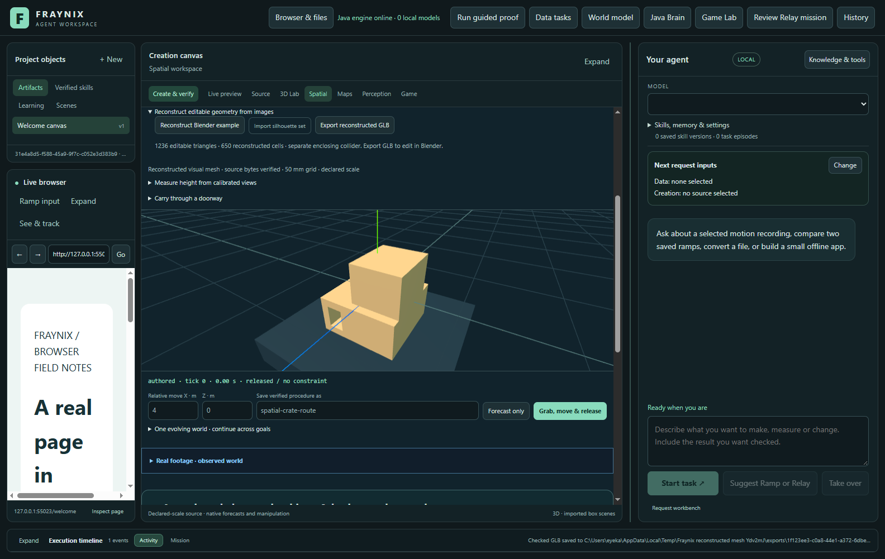
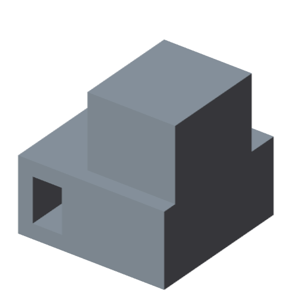

Reconstruct editable 3D geometry from images
Three calibrated silhouettes become a triangle mesh. Blender checks the result and returns an actual edit.
The original and reconstructed bracket matched pixel for pixel in the withheld silhouette. The hidden-recess control shows where the three input views leave uncertainty.

The editable reconstruction in Fraynix Spatial

Original from the withheld Blender angle
Java reconstruction from the same withheld Blender angle
System files
Open source